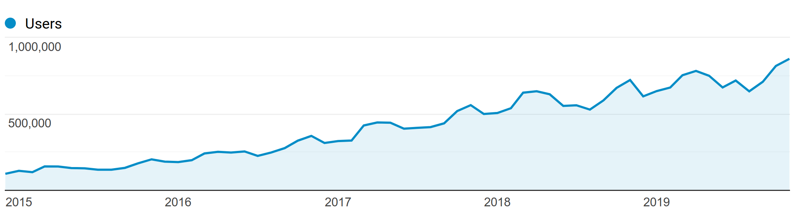

class: center, middle # Introduction to scikit-learn ## Predictive modeling in Python Olivier Grisel .affiliations[   ] Slides: [ogrisel.github.io/decks/2019_intro_sklearn](http://ogrisel.github.io/decks/2019_intro_sklearn) --- # Agenda .middlebelowheader[ ### Machine Learning refresher ### Scikit-learn ### HPC and Scikit-learn ] --- # Predictive Modeling 101 .middlebelowheader[ ### Make predictions of outcome of repeated events ### Extract the structure of historical records ### Statistical tools to summarize the training data into an executable model ### Alternative to hard-coded rules written by experts ] --- background-image: url(images/real-estate-1.png) background-size: contain --- background-image: url(images/real-estate-2.png) background-size: contain --- background-image: url(images/real-estate-3.png) background-size: contain --- background-image: url(images/real-estate-4.png) background-size: contain --- background-image: url(images/predictive-modeling-examples.png) background-size: contain --- background-image: url(images/ml-flow-01.png) background-size: contain --- background-image: url(images/ml-flow-02.png) background-size: contain --- background-image: url(images/ml-flow-03.png) background-size: contain --- background-image: url(images/ml-flow-04.png) background-size: contain --- background-image: url(images/ml-flow-05.png) background-size: contain --- background-image: url(images/ml-flow-06.png) background-size: contain --- background-image: url(images/ml-flow-07.png) background-size: contain --- background-image: url(images/ml-flow-08.png) background-size: contain --- background-image: url(images/ml-flow-09.png) background-size: contain --- background-image: url(images/ml-flow-10.png) background-size: contain --- background-image: url(images/ml-flow-10.1.png) background-size: contain --- background-image: url(images/ml-flow-11.png) background-size: contain --- class: center, middle, bgheader background-color: rgb(30, 100, 0) # Scikit-learn --- .center[  ] .middlebelowheader[ ### Library of Machine Learning algorithms ### Open Source project ### Python / NumPy / SciPy / Cython ### Simple **fit** / **predict** / **transform** API ### Model Assessment, Selection, Ensembles ] --- .center[  ] .middlebelowheader[ ### Core team: Australia, China, France, Germany, USA ### Users: Scientific/Academic and Business/Industry  ] --- background-image: url(images/funding-1.png) background-size: 80% --- background-image: url(images/funding-2.png) background-size: 80% --- background-image: url(images/sklearn-flow-1.png) background-size: contain --- background-image: url(images/sklearn-flow-2.png) background-size: contain --- background-image: url(images/sklearn-flow-3.png) background-size: contain --- # Linear Classifier .middlebelowheader.medium[ ```python from sklearn.linear_model import LogisticRegression model = LogisticRegression(C=1, penalty='l1') model.fit(X_train, y_train) y_predicted = model.predict(X_test) from sklearn.metrics import f1_score f1_score(y_test, y_predicted) ``` ] --- # Support Vector Machine .middlebelowheader.medium[ ```python from sklearn.svm import SVC model = SVC(kernel="rbf", C=1.0, gamma=1e-4) model.fit(X_train, y_train) y_predicted = model.predict(X_test) from sklearn.metrics import f1_score f1_score(y_test, y_predicted) ``` ] --- # Random Forest .middlebelowheader.medium[ ```python from sklearn.ensemble import RandomForestClassifier model = RandomForestClassifier(n_estimators=200) model.fit(X_train, y_train) y_predicted = model.predict(X_test) from sklearn.metrics import f1_score f1_score(y_test, y_predicted) ``` ] --- background-image: url(images/classifier_comparison.png) background-size: contain --- background-image: url(images/scikit-learn.org.png) background-size: contain --- class: center, middle, bgheader background-image: url(images/racks-8533890844_02fa24474d_o.jpg) background-size: cover # Scikit-learn and HPC --- # Parallelism on scikit-learn - Process-based parallelism: joblib - Thread-based parallelism: - numpy / scipy => BLAS (MKL / OpenBLAS) - Cython prange => OpenMP (GCC, ICC, LLVM, MSVC) - Multi-backend: joblib (Dask, Apache Spark, Ray...) --- # Distributed computation ## IO intensive (data manipulation) - Feature engineering (dask dataframe, spark dataframe) - scikit-learn `Pipeline` not enough: dask-ml -- ## CPU intensive (machine learning) - Only valid for low communication (long) tasks - Main use case: hyper-parameter search --- # OpenMP in Scikit-learn - Sometimes parallelism is possible in the inner Cython loop -- - Typical case: Gradient Boosted Trees - CPU intensive algorithm / Sequential outer loop - Cython-prange works well: code stays readable -- - (GNU) OpenMP used to crash when nested Python multiprocessing - Fixed by developing new process-based backend for joblib (loky) - Work in Python's pickle lib to reduce IPC overhead --- # Distributed training loop? - Estimator fit often would require heavy communication - GBRT scalability collapse after 16 threads on 1 hosts -- - LightGBM provides a low-communication approximate algorithm for distributed setting - Significant effort to implement low-communication variant. - Very few users have enough data to actually need that. -- - YAGNI? Better distributed CV or hyper-parameter search --- # Over-subscription Problems - OpenMP and BLAS nested under Python processes: - numpy-based estimator run under `RandomSearchCV` - GBRT estimator run under `RandomSearchCV` - easily fixed by setting env variables when starting workers - BLAS calls under Cython OpenMP loops --- # Blas nested under a Cython-OpenMP loop - Use case in scikit-learn: new implementation of K-Means - BLAS can manage its own thread pool or use OpenMP - Cython code in sklearn can be link to a different OpenMP runtime than the one used by the BLAS shipped with numpy/scipy. - AFAIK: no standard way to allow composability between different OpenMP runtimes running in the same Python program. - How to avoid over-subscription? --- # threadpoolctl - Makes it possible to introspect the runtime state - Provides a Python context manager to reconfigure the threadpool sizes dynamically. --- # threadpoolctl command line ``` python -m threadpoolctl -i numpy scipy.linalg [ { "filepath": "/home/ogrisel/miniconda3/envs/tmp/lib/libmkl_rt.so", "prefix": "libmkl_rt", "user_api": "blas", "internal_api": "mkl", "version": "2019.0.4", "num_threads": 2, "threading_layer": "intel" }, { "filepath": "/home/ogrisel/miniconda3/envs/tmp/lib/libiomp5.so", "prefix": "libiomp", "user_api": "openmp", "internal_api": "openmp", "version": null, "num_threads": 4 } ``` --- # threadpoolctl Python API ```python >>> from threadpoolctl import threadpool_info >>> from pprint import pprint >>> pprint(threadpool_info()) [] >>> import numpy >>> pprint(threadpool_info()) [{'filepath': '/home/ogrisel/miniconda3/envs/tmp/lib/libmkl_rt.so', 'internal_api': 'mkl', 'num_threads': 2, 'prefix': 'libmkl_rt', 'threading_layer': 'intel', 'user_api': 'blas', 'version': '2019.0.4'}, {'filepath': '/home/ogrisel/miniconda3/envs/tmp/lib/libiomp5.so', 'internal_api': 'openmp', 'num_threads': 4, 'prefix': 'libiomp', 'user_api': 'openmp', 'version': None}] ``` --- # threadpoolctl Python API ```python >>> from threadpoolctl import threadpool_info >>> from pprint import pprint >>> pprint(threadpool_info()) [] >>> import xgboost >>> pprint(threadpool_info()) [{'filepath': '/home/ogrisel/miniconda3/envs/tmp/lib/libmkl_rt.so', 'internal_api': 'mkl', 'num_threads': 2, 'prefix': 'libmkl_rt', 'threading_layer': 'intel', 'user_api': 'blas', 'version': '2019.0.4'}, {'filepath': '/home/ogrisel/miniconda3/envs/tmp/lib/libiomp5.so', 'internal_api': 'openmp', 'num_threads': 4, 'prefix': 'libiomp', 'user_api': 'openmp', 'version': None}, {'filepath': '/home/ogrisel/miniconda3/envs/tmp/lib/libgomp.so.1.0.0', 'internal_api': 'openmp', 'num_threads': 4, 'prefix': 'libgomp', 'user_api': 'openmp', 'version': None}] ``` --- # threadpoolctl for over-subscription control ```python from threadpoolctl import threadpool_limits import numpy as np with threadpool_limits(limits=1, user_api='blas'): # In this block, calls to blas implementation (like openblas or MKL) # will be limited to use only one thread. They can thus be used jointly # with thread-parallelism. a = np.random.randn(1000, 1000) a_squared = a @ a ``` --- class: center, middle, bgheader background-image: url(images/forest-9026372290_ffed331779_k.jpg) background-size: cover # Where do predictive models fit? --- background-image: url(images/11-big-data-archictecture.png) background-size: contain --- background-image: url(images/12-big-data-tools-mix-1.png) background-size: contain --- background-image: url(images/13-big-data-tools-mix-2.png) background-size: contain --- class: center, middle, bgheader background-image: url(images/racks-8533890844_02fa24474d_o.jpg) background-size: cover # Scikit-learn development --- background-image: url(images/list_of_open_prs.png) background-size: contain --- background-image: url(images/pr-1.png) background-size: contain --- background-image: url(images/pr-1.1.png) background-size: contain --- background-image: url(images/pr-2.png) background-size: contain --- background-image: url(images/pr-2.png) background-size: contain --- background-image: url(images/pr-3.png) background-size: contain --- background-image: url(images/pr-4.png) background-size: contain --- background-image: url(images/changelog.png) background-size: contain --- background-image: url(images/contributors.png) background-size: contain --- background-image: url(images/fondation_inria_scikit-learn_partners.png) background-size: contain --- background-image: url(images/community.png) background-size: contain --- class: center, middle, bgheader background-color: rgb(30, 100, 0) # Conclusion --- class: middle, center, singleimg  --- # Secrets of the success of Python (& R) in Data Science .middlebelowheader[ ### Iterative exploration with built-in plotting tools ### Low latency of single host in-memory computing ### Easy to install, easy to teach: no-sysadmin required ### Rich ecosystem of libraries ] --- class: middle # Thank you for your attention! - https://scikit-learn.org - Slides: [ogrisel.github.io/decks/2019_intro_sklearn](http://ogrisel.github.io/decks/2019_intro_sklearn) - @ogrisel on twitter --- Background image credits - https://www.flickr.com/photos/jemimus/8533890844/ - https://www.flickr.com/photos/antcaz/2249694239/ - https://www.flickr.com/photos/benjamine-s/14004414605 - https://www.flickr.com/photos/a-herzog/9026372290